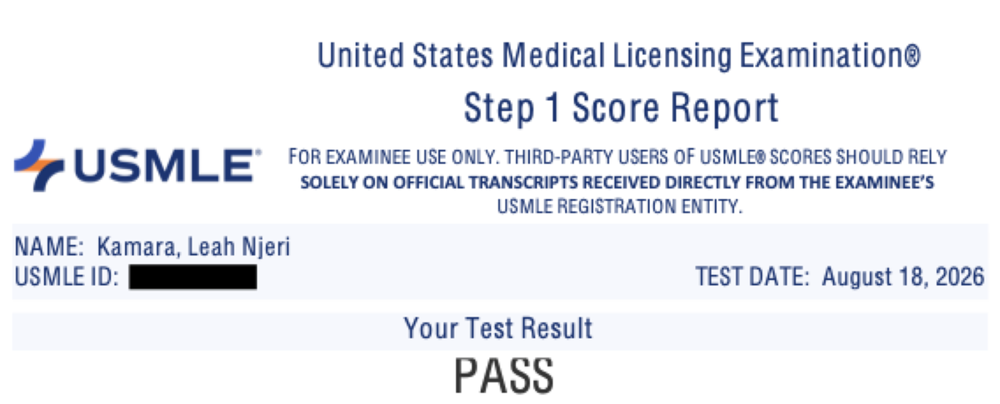
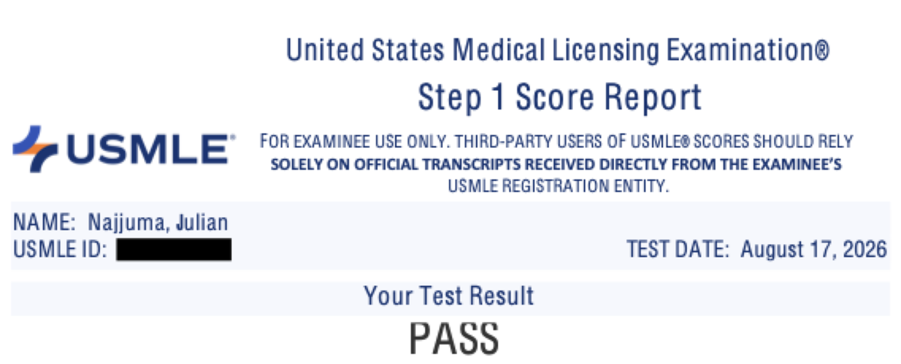

General principles
- Biochemistry
- Immunology
- Microbiology
- General pathology
- Pharmacology
- Public health sciences: epidemiology, biostatistics, ethics
I would like to congratulate our latest USMLE test takers, Leah Kamara and Julian Najjuma. They now add to the list of wins we have from Austin Flint!


A small, mentor-led Step 1 class that meets live on Zoom every day of the week. We work through the whole of First Aid in order, system by system, then answer exam style questions on the same topic while it is still fresh. Running since June 2026, and you can start at the beginning of any month.
We meet live every day and work through First Aid in order, system by system. Each class is about two and a half hours: the teaching first, then exam style questions on the same topic while it is still fresh.
The class is live so you can interrupt. Questions are worked out loud, so you hear the reasoning rather than just the answer. Most of what goes wrong on Step 1 is not knowledge, it is how a stem gets read, and that only improves out loud.
Every session is recorded and on your dashboard the same night, so missing one costs you nothing. Alongside the class you get one to one time with Allan whenever you need it, and guidance through ECFMG certification and the match.
It runs month to month. There is no long contract and no cohort you can be too late for. You join at the start of a month and stay as long as it is useful.
The class walks through the whole of First Aid 2025, chapter by chapter. General principles first, then the organ systems. When we reach the end, we start again, so nothing is a one-off.
Two and a half hours, every day of the week, 5:00 AM East Africa and 9:00 PM US Central.
Every chapter, in order. We read it together rather than at you, and the cycle repeats.
Exam style questions on the day's topic, reasoned out loud so you hear how a stem is read.
Every recording, the day's plan, notes and slides, in one place you sign in to.
Two bookable windows a day. Bring a topic, a score report, or a plan that is not working.
Through registration, scheduling, and preparing for residency applications.
New places open at the start of each month. Send Allan a message and he will tell you what the class is covering next and what it costs where you are. He replies within a day.